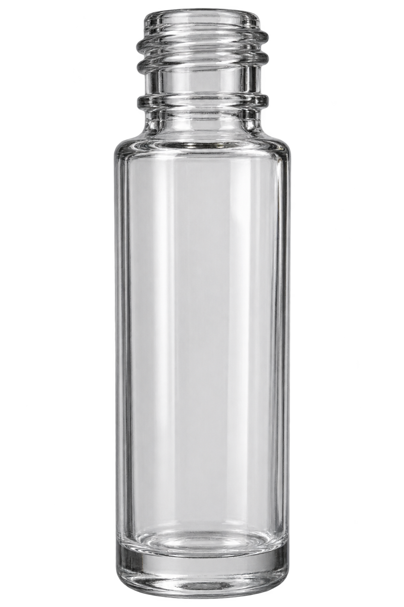
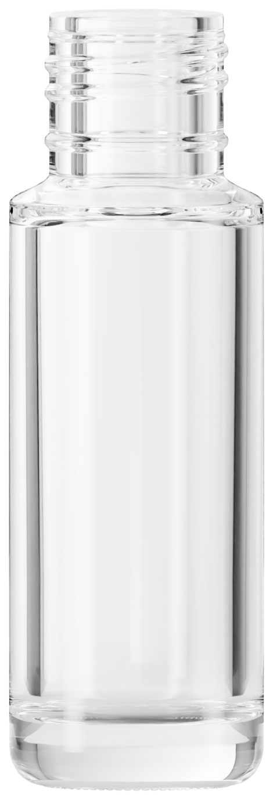
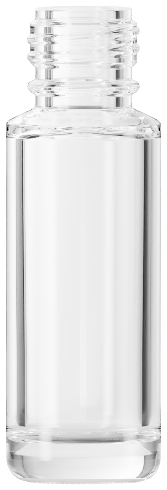

Clear 5 ml: reference and local render
Your confirmed clear 5 ml example guides the appearance. The local bottle retains your caliper measurements and the catalog’s light background. Clear and cobalt share the updated geometry; their approved lighting and materials are retained.
Your clear 5 ml example

Previous neck profile

Approved neck profile

Continuous full-height highlights, graduated edge reflections and the softly lit studio seen through the glass. The body diameter is 17.45 mm and the outside threads are 12.60 mm. Height stays 53.23 mm. Glass materials, lighting, camera and stage placement are preserved.
Open interactive clear bottle · Verification report
Clear and cobalt v19 approved by Jordan on October 31, 2026. Locked locally across all 71 component configurations and connected to the bottle builder. The 10.92 mm plain rim is derived from the wall measurements under a uniform 7.32 mm opening assumption; the plain neck lands follow the reference. Original files preserved. Nothing published.